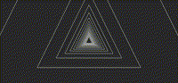
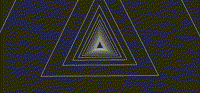
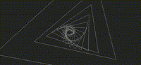
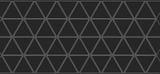
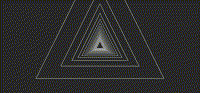

|
|
||||||||||
|
|
 |
 |
 |
|
 |
|
____ | |||
|
 slower |
||||||||||
You can remotely set BPM, speed, and mode sequences via UDP (python example with instructions here).
If you do this, the UP command will start the sequence AND sync the beat but will not change the BPM.
DOWN will pause the sequence. A second DOWN will forget the sequence, and revert to manual control.
You can also start/pause/forget the sequence using OS2L commands (see below).
You can control the app using the OS2L protocol which is supported by most DJ software. See this page for usage instructions.
You can control the app using only the screen or TV remote.
Tap left/right 20% of screen (TV remote: LEFT/RIGHT) to switch animation modes.
Tap upper 60% of the screen (TV remote: UP) to set a beat period.
The more (and more accurately) you click, the better the sync will get.
Swipe left/right to shift beat phase without changing the period.
Tap lower 40% of the screen or (TV remote: DOWN) to pause and then cancel beats.
Vertical swipes change speed in motion modes, but...
...whenever you change the beat period, the speed is recalculated to match it.
Long press will switch between white and red color.